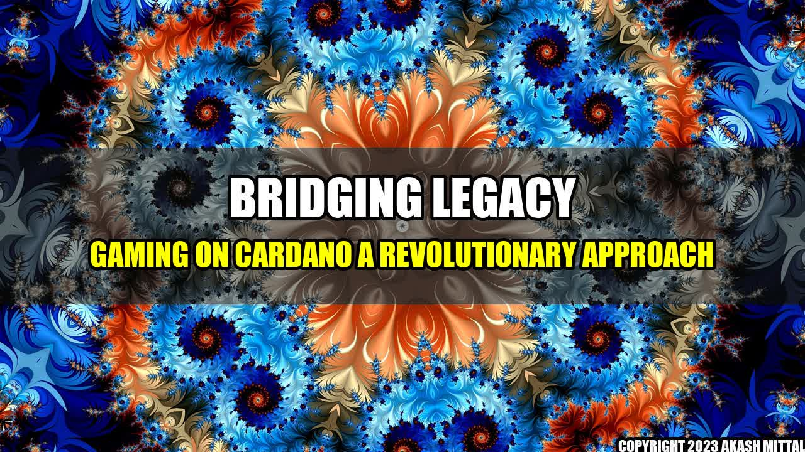

Bridging Legacy Gaming on Cardano: A Revolutionary Approach
Imagine playing your favorite legacy game, which youâve spent hours mastering, but with the added benefits of blockchain technology. Thatâs precisely what Cardano intends to do, in a bid to revolutionize the gaming industry.
Bridging Legacy Gaming and Blockchain Technology
Legacy gaming is a term used to describe traditional video games that were popular before the advent of gaming consoles and online multiplayer gaming. These games offer a sense of nostalgia and a unique gaming experience that cannot be found in modern games.
Cardano, a blockchain platform that uses proof-of-stake (PoS) algorithm and aims to provide a secure and scalable infrastructure for decentralised applications, plans to bridge legacy gaming with blockchain technology through its unique approach.
How It Works
Cardano has developed a bridge to connect legacy games with their Cardano-based counterparts. This bridge enables gamers to transfer their legacy gaming data and progress onto the Cardano blockchain. Once on the blockchain, the data is immutable, secure, and can be used to mint new blockchain-based assets that can be used in other games or even sold in Cardano-based marketplaces.
Essentially, this bridge will enable gamers to continue playing their favorite legacy games while experiencing the benefits of blockchain technology, such as decentralization, transparency, security, and ownership.
Real-Life Examples
One real-life example of the Cardano legacy gaming bridge in action is the popular trading card game, Magic: The Gathering. The game has been around since the early 1990s and has maintained its popularity till today. Magic: The Gathering is built on a legacy gaming engine, which makes it an ideal candidate for the Cardano bridge. Using the bridge, players can transfer their existing card collection to the blockchain, making them immutable, transferrable, and verifiable.
Another real-life example is the classic video game, Super Mario Bros. Imagine being able to transfer your old game progress and statistics onto the blockchain and replaying the game with the same level of mastery, but now with the added benefits of being on the blockchain. This is just the tip of the iceberg, in terms of possibilities.
Main Companies Behind the Technology
- Cardano: The blockchain platform behind the legacy gaming bridge technology.
- Wizards of the Coast: The creator of Magic: The Gathering and a strategic partner of Cardano.
- Nintendo: The creator of Super Mario Bros. and a potential strategic partner of Cardano, given its interest in blockchain technology.
Conclusion
- The Cardano legacy gaming bridge is a revolutionary approach that merges the nostalgia of traditional gaming with the benefits of blockchain technology.
- The technology has already been tested with popular games like Magic: The Gathering and Super Mario Bros, opening up the possibility for other legacy games to follow suit.
- Cardano continues to partner with leading gaming companies to develop and expand the potential of the legacy gaming bridge technology further.
Akash Mittal Tech Article
Share on Twitter Share on LinkedIn